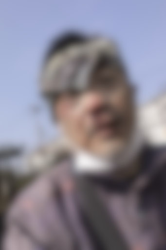
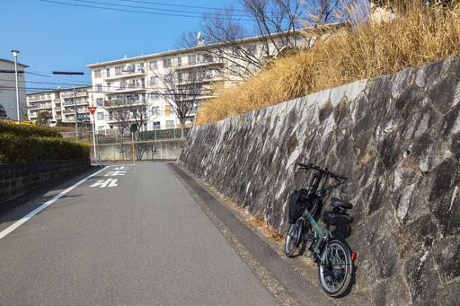

自転車が午前中に届いた。なので早速、近所の公園で自転車の再習得のための練習を行った。
以前、再習得のための練習と確認の手順をまとめた。おおよそ、その通りに進める。
聞いてはいたが、小径車はハンドルが安定しない。尋常じゃないくらい安定しない。もちろん小脳性協調運動障害のせいでもあるとは思う。とはいえ、グランドであれば、ふらつきながらもなんとかペダルを漕いで、走行が可能だった。
ただしスタートは、両足、または片足で地面を蹴って、加速してからペダリングを始める。そうすることで、スタートが可能だということは確認できた。停車は両足を着く必要があった。そうでなければ転倒する。
グランドを時計回り、半時計回りで何度も周回する。スタートは 1 速でないと危険だが、走行中は 3 速が最も安定するようだった。4、5 速となると、ちょっと踏み込みに力が必要で、協調運動障害の関係で、走行に安定性を欠く状況だった。
グランドで、ある程度走れることを確認すると、ゆるい坂を登ることができるかどうか試してみたくなった。
そんな色気を出したのがいけなかった。
坂は最初は思ったより安定して下ることができていた。が停車がいけなかった。停止のために減速すると、ハンドルが暴れ始め、車体の安定を欠くようになってしまった。
結局安定した停車が不可能になり、顔面から落車してしまった。
坂はアスファルトで舗装されているのだけれど、アスファルト上にボタボタと血が落ちて、止まらない。まるで額を割られたプロレスラーみたいだ。
派手に出血しているのでさすがに焦る。
幸いバンダナを持っていたので、それて額の傷を圧迫止血するよう試みる。だがなかなか止まらない。その場所でじっとしているわけにもいかないので (人がいないので助けは来ない)、バンダナを頭に巻き、とりあえず流れ出てる血液が、服やかばんにつかないように試みる。
無駄ではなかったが、手も血まみれで、ハンドルもかばんも、着ているフリースも血だらけになってしまった。早く帰って洗濯せねば。そうしないと血が落ちなくなる。
そんな状況にも関わらず、のんきに自転車の写真を撮ってる俺ってホントバカ。
家にたどり着くまで、100 人いたら 100 人とも自分の顔を覗き込む。そしてすぐに目を逸らすwww
まぁ、いったい何事！？と思うよね。じじいが顔面血だらけで、自転車を押してるんだから。
家に帰り着いたら、とりあえず血を洗い落とす。いや洗い落とそうとした。無駄だった。落ちない。出血はある程度落ち着いてはいたので、そこは安心材料。
とりあえず手を洗って、顔面の出血を処理する。鏡を見ると、額と鼻の下の辺りの肉が派手にえぐれてとれている。出血が止まらないわけだ。
出血はガーゼを強めに当てて止血するしか方法がない。だけどガーゼがない。なので代わりにティッシュを使った。ガーゼを固定するための絆創膏もないので、バンドエイドを使った。
あるものでなんとかする、ということは、昔、山で普通にやっていた。昔の経験と知識が生きた、と言いたいところだが、山で応急処置なんてする経験自体は、まったくなかった。
そんなわけで、今も自分の顔面二箇所には、でかいティッシュが、ガーゼのように張り付いている。
右目の下のさほど深くない擦り傷が、炎症を起こして、なぜか痛んでいる。一番ひどい傷の額と鼻の下があまり痛くないのはなぜなのか。もしかして神経ごと、いってるのかもしれない。
この二箇所のでかいティッシュだけど、恐らく数日は外せない。なぜかというと、人間の体は、血小板の働きで血が固まることで止血されるわけだけれども、ティッシュやガーゼごと血液は固まる。ティッシュやガーゼを傷から引き剥がすと、固まった血液ごと剥がれてしまい、また出血が止まらなくなる。
そのため、皮膚 (と呼んでいいのか、甚だ疑問だけど) がある程度、回復しないと、ガーゼやティッシュを取り除くことができない。問題は、そのおかげで飯を食ったり、水分を飲んだりしにくい、ってことだ。 < それだけなのか！？とセルフツッコミ
あと感染症予防のために、しばらく風呂も我慢だ。
追記
さっき気がついたが、軽いむちうちを起こしているようだ。首の後側が痛い。